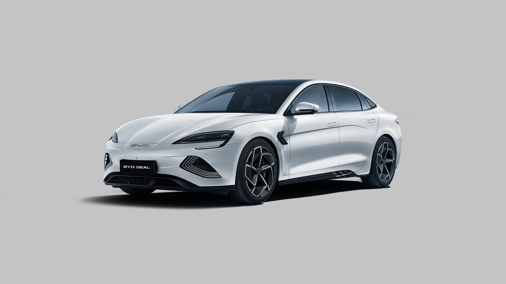
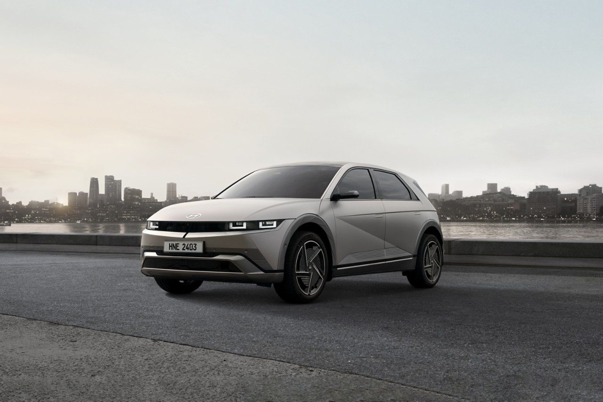
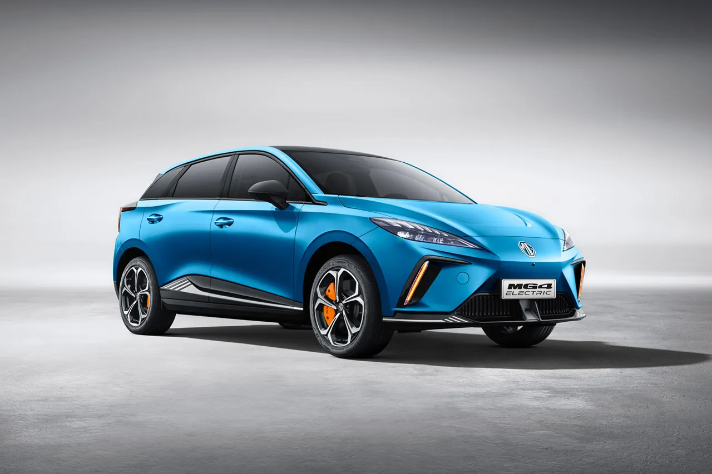

Considerando que estamos a mediados de 2025, los siguientes carros electricos se caracterizan por su
eficiencia, calidad y una estimación de sus precios en México (sujetos a cambios y versiones específicas).
Es importante recordar que los precios pueden variar por impuestos, versiones,
equipamiento extra y ofertas de cada distribuidor.
Algunos Módelos
⚡︎ BYD Seal
Por qué es de los mejores: Ofrece una combinación excepcional de diseño,
rendimiento deportivo, tecnología de batería Blade (segura y de gran autonomía),
y un interior premium a un precio muy competitivo. Es un fuerte rival para el Tesla Model 3.
Autonomía (WLTP): Hasta 570 km.
Precio estimado en México: Desde aproximadamente $778,800 MXN.

⚡︎ Tesla Model 3
Por qué es de los mejores: Sigue siendo un referente por su eficiencia,
la robusta red de Supercargadores, la experiencia de software inigualable y un rendimiento excelente.
La versión actualizada "Highland" ha mejorado aún más la calidad y la comodidad.
Autonomía (WLTP): Hasta 702 km (versión Gran Autonomía RWD).
Precio estimado en México: Desde aproximadamente $803,000 MXN.
⚡︎ Hyundai IONIQ 5
Por qué es de los mejores: Destaca por su diseño retro-futurista único, su espacioso y versátil interior,
y su avanzada plataforma E-GMP que permite una carga ultrarrápida (del 10 al 80% en unos 18 minutos).
La calidad de los materiales y la experiencia de manejo son excelentes.
Autonomía (WLTP): Hasta 507 km.
Precio estimado en México: Desde aproximadamente $1,187,100 MXN.

⚡︎ MG MG4 Electric
Por qué es de los mejores: Representa uno de los mejores valores en el mercado.
Ofrece una autonomía sólida, un buen rendimiento dinámico (especialmente en la versión XPOWER),
y un equipamiento muy completo por un precio que lo hace muy accesible.
Es un excelente eléctrico para el día a día.
Autonomía (WLTP): Hasta 450 km (versión de mayor autonomía).
Precio estimado en México: Desde aproximadamente $474,900 MXN.

⚡︎ BYD Dolphin
Por qué es de los mejores: Si bien su hermano menor, el Dolphin Mini,
es el más asequible, el Dolphin ofrece un equilibrio superior entre tamaño,
autonomía, tecnología y precio. Es un hatchback compacto ideal para la ciudad
y pequeños viajes por carretera, con la confiabilidad de la batería Blade.
Autonomía (WLTP): Alrededor de 400 km.
Precio estimado en México: Desde aproximadamente $535,900 MXN.